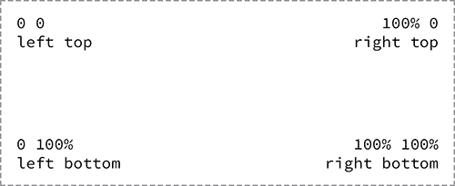
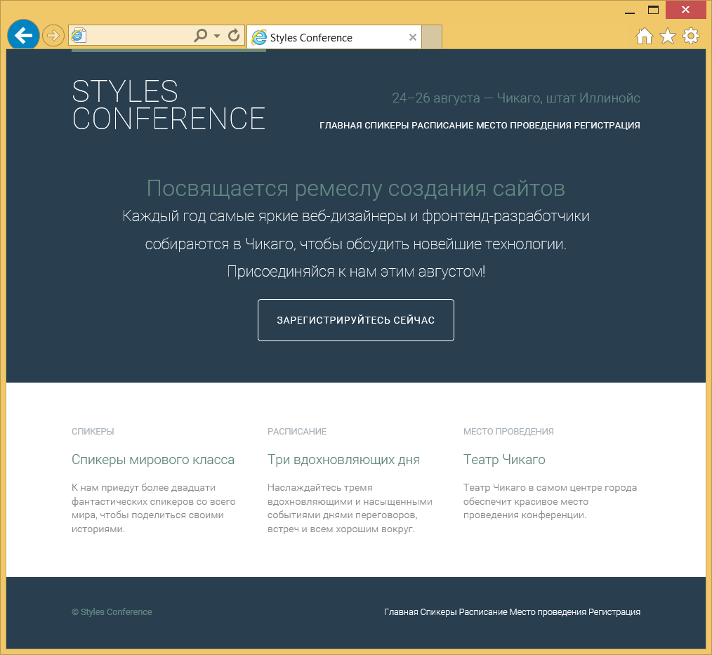
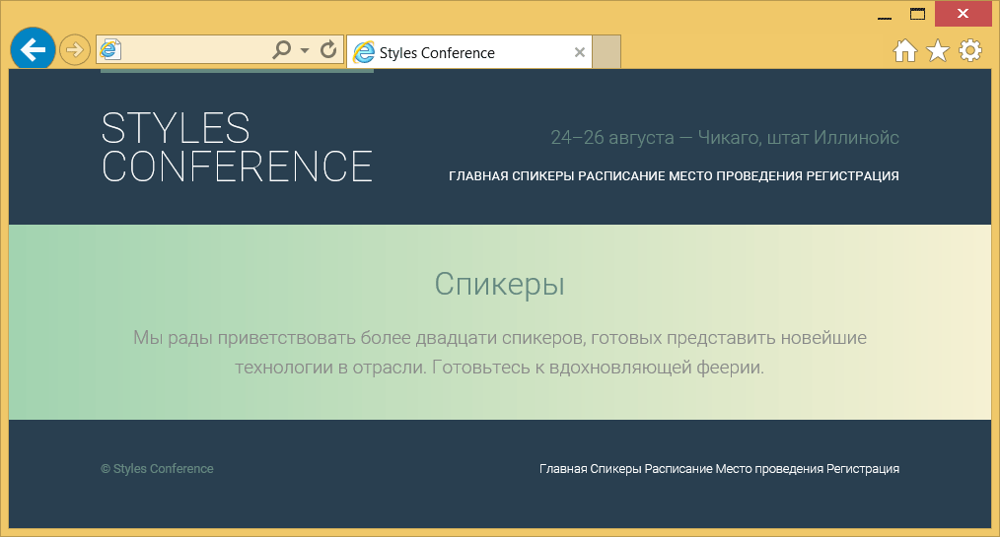
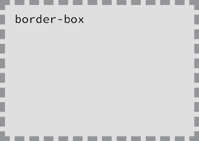
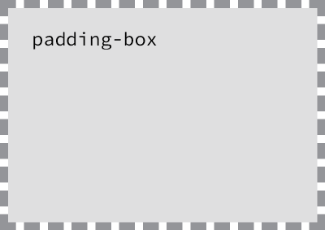
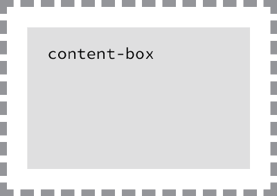

Установка фона и градиента
Фон оказывает значительное воздействие на дизайн сайта. Он помогает создать впечатляюще выглядящий сайт, установить группирование и определить приоритет, фон также серьёзно влияет на юзабилити сайта.
В CSS фон элемента может быть сплошного цвета, изображением, градиентом или их комбинацией. Когда мы решаем, как реализовать такой фон, то должны понимать, что каждый фон влияет на общий вид нашего сайта.
В этом уроке мы рассмотрим как назначать разные типы фона для элементов, в том числе градиенты. Мы также поиграем с набором свойств CSS3, связанных с фоном.
Добавление цвета фона
Самый быстрый способ добавить фон к элементу — это установить однотонный фон с помощью свойства background или background-color. Свойство background принимает цвет и изображения в сокращённой форме, в то время как свойство background-color используется строго для установки сплошной фоновой заливки. Оба свойства работают, а какое вы решите использовать зависит от ваших предпочтений, а также ситуации.
div {
background-color: #b2b2b2;
}При добавлении цвета фона у нас есть несколько вариантов значений, которые мы можем использовать. Подобно другим цветовым значениям мы можем выбрать из ключевых слов, шестнадцатеричных кодов и значений RGB, RGBa, HSL и HSLa. Чаще мы встретим шестнадцатеричные значения, однако можем иногда пожелать задействовать RGBa или значения HSLa для прозрачности.
Прозрачный фон
При использовании значения RGBa или HSLa в качестве прозрачного цвета фона хорошей идеей будет обеспечить также запасной цвет, потому что не все браузеры понимают RGBa или HSLa. И когда браузер встречает значение, которое он не распознаёт, то игнорирует его.
К счастью, есть простой способ обеспечить запасной вариант для фона. CSS каскадирует с верхней части файла до его низа, таким образом, мы можем использовать два свойства background-color в едином наборе правил. Первое свойство background-color будет включать «безопасный» цвет фона в виде шестнадцатеричного значения, а второе свойство background-color будет использовать RGBa или HSLa. При этом, если браузер понимает значение RGBa или HSLa, то отобразит его, а если нет, то вернётся к шестнадцатеричному значению перед ним.
div {
background-color: #b2b2b2;
background-color: rgba(0, 0, 0, .3);
}Добавление фонового изображения
Кроме цвета фона элемента мы можем также добавить к нему фоновое изображение. Такие изображения работают аналогично цвету фона, однако предлагают несколько дополнительных свойств для уточнения. Как и прежде, мы можем использовать свойство background с сокращённым значением или свойство background-image напрямую. Независимо от применяемого свойства они требуют указать источник изображения с помощью функции url().
Значение функции url() будет адресом фоновой картинки и к нему применяются знакомые правила для создания пути гиперссылки. Следите за разными папками и не забудьте показать, где именно находится изображение. Путь помещается внутри скобок и кавычек.
div {
background-image: url("alert.png");
}Добавление фонового изображения с одним лишь значением url может выдать нежелательные результаты, так как по умолчанию фоновое изображение будет повторяться по горизонтали и вертикали от левого верхнего угла данного элемента, чтобы заполнить фон элемента целиком. К счастью, мы можем использовать свойства background-repeat и background-position для управления, как именно повторять картинки.
background-repeat
По умолчанию, фоновое изображение будет повторяться бесконечно по вертикали и горизонтали, если не указано иное. Свойство background-repeat может быть использовано чтобы изменить направление, в котором фоновая картинка будет повторяться, если она вообще повторяется.
div {
background-image: url("alert.png");
background-repeat: no-repeat;
}Свойство background-repeat принимает четыре разных значения: repeat, repeat-x, repeat-y и no-repeat. repeat является значением по умолчанию и повторяет фоновое изображение по вертикали и по горизонтали.
Значение repeat-x повторяет фоновое изображение по горизонтали, в то время как значение repeat-y повторяет его по вертикали. Наконец, значение no-repeat говорит браузеру отобразить картинку один раз, то есть не повторять её вообще.
background-position
По умолчанию, фоновая картинка располагается в левом верхнем углу элемента. Тем не менее, с помощью свойства background-position мы можем контролировать, где именно изображение размещается относительно этого угла.
div {
background-image: url("alert.png");
background-position: 20px 10px;
background-repeat: no-repeat;
}Свойство background-position требует два значения: горизонтальное смещение (первое значение) и вертикальное смещение (второе значение). Если указано только одно значение, то оно применяется для горизонтального смещения, а вертикальное по умолчанию задаётся как 50%.
Поскольку мы двигаем фоновое изображение из левого верхнего угла элемента, значения размера будут непосредственно привязаны к этому углу.
Чтобы установить значение background-position мы можем использовать ключевые слова top, right, bottom и left, пиксели, проценты или любую единицу размера. Ключевые слова и проценты работают очень похоже. Значение left top идентично процентному значению 0 0, которое располагает изображение в левом верхнем углу элемента. Значение right bottom идентично процентной записи 100% 100% и будет позиционировать изображение в правом нижнем углу элемента.

Рис. 7.01. Фоновые изображения позиционируются от левого верхнего угла элемента
Одним из преимуществ процентов по сравнению с ключевыми словами является возможность центрирования фонового изображения с помощью значения 50%. Для размещения фонового изображения в верхней части элемента, мы можем использовать значение 50% 0. Применение пикселей в качестве значения background-position также распространено, так как пиксели дают нам точный контроль над положением фона.
Значения background
Свойства background-color, background-image, background-position и background-repeat могут выступать значением для единичного свойства background. Порядок этих свойств в background может варьироваться, но обычно он такой: background-color, background-image, background-position, а затем background-repeat.
div {
background: #b2b2b2 url("alert.png") 20px 10px no-repeat;
}Пример фонового изображения
В следующем примере мы будем использовать свойство background, которое включает значения background-color, background-image, background-position и background-repeat.
Пожалуйста, обратите внимание, что в background-position содержится относительное и абсолютное значение. Первое значение, 20 пикселей — это горизонтальная величина, позиционирование background-image на 20 пикселей от левого края элемента. Второе значение, 50% — это вертикальная величина, которая центрирует фоновое изображение по вертикали.
Несколько других свойств и значений также включены в правила класса notice-success, чтобы установить дальнейший стиль сообщения.
HTML
<div class="notice-success">
Ура! Поздравляем, вы сделали это!
</div>CSS
.notice-success {
background: #67b11c url("tick.png") 20px 50% no-repeat;
border: 2px solid #467813;
border-radius: 5px;
color: #fff;
font-family: "Helvetica Neue", Helvetica, Arial, sans-serif;
padding: 15px 20px 15px 50px;
}Демонстрация фоновой картинки
На практике
Возвращаясь к нашему сайту Styles Conference, давайте добавим немного фонового цвета. Пока мы это делаем, изменим несколько других стилей, чтобы заставить все наши стили работать совместно и сохранить всё наше содержание разборчивыми.
Начнём с большого шага и применим синий фон к элементу <body> наряду с имеющимися свойствами color и font. Все стилевые правила для элемента <body>, установленные на данный момент, включают следующее:
body { background: #293f50; color: #888; font: 300 16px/22px "Roboto", "Open Sans", "Helvetica Neue", Helvetica, Arial, sans-serif; }Мы поместили синий фон для элемента <body> намеренно, так как наш сайт будет содержать несколько разных рядов background, а наиболее частым цветом фона будет синий.
Теперь, когда каждая страница на нашем сайте Styles Conference включает в себя синий фон, давайте очистим несколько областей с этим синим фоном. В частности, наши элементы <header> и <footer> останутся синими, как и раздел hero на главной странице.
Внутри элементов <header> и <footer> укажем цвет ссылок белым, а затем при наведении на них курсора мыши тем же зелёным, что и заголовки.
Начнём с элемента <header>. Чтобы выбрать все элементы <a> внутри элемента <header> мы добавим класс primary-header к <header> (в дополнение к существующим классам container и group). Не забывайте, мы должны добавить этот класс к элементам <header> во всех наших страницах.
<header class="primary-header container group"> ... </header>С классом primary-header у элемента <header> и существующим классом primary-footer у <footer> мы можем добавить два новых правила ниже раздела со ссылками в нашем файле main.css.
Первый набор правил будет выбирать все элементы <a> внутри элемента с классом primary-header или primary-footer и установит их цвет на белый, как это определено запятой, разделяющей два отдельных селектора, у которых одно и то же свойство и значение. Второй набор правил будет выбирать те же элементы <a> что и раньше, но поменяет их цвет на зелёный, когда пользователь наводит на них указатель.
.primary-header a, .primary-footer a { color: #fff; } .primary-header a:hover, .primary-footer a:hover { color: #648880; }Пока мы делаем некоторый текст белым, давайте сделаем текст в разделе hero на главной странице тоже белым, так как он будет оставаться на синем фоне. У нас есть существующий класс hero, к которому можно добавить стили, так что установим белый цвет текста в нём. В целом, набор правил для класса hero должен включать в себя следующее:
.hero { color: #fff; line-height: 44px; padding: 22px 80px 66px 80px; text-align: center; }Также в разделе hero нашей главной страницы уберём некоторые стили кнопок. Начнём с добавления нескольких новых свойств для набора правил с классом btn, в разделе с кнопками нашего файла main.css.
В частности, заменим цвет текста кнопки на белый, зададим cursor как pointer, увеличим font-weight, добавим небольшое расстояние в letter-spacing и изменим text-transform на uppercase.
В целом, наш новый набор правил для класса btn должен выглядеть следующим образом:
.btn { border-radius: 5px; color: #fff; cursor: pointer; display: inline-block; font-weight: 400; letter-spacing: .5px; margin: 0; text-transform: uppercase; }Мы также очистим некоторые стили запасных кнопок путём установки класса btn-alt. В частности, сделаем рамку у кнопки белой и добавим стиль для :hover, который включает белый фон и синий цвет текста.
Со всеми дополнениями наш новый класс btn-alt должен выглядеть следующим образом:
.btn-alt { border: 1px solid #fff; padding: 10px 30px; } .btn-alt:hover { background: #fff; color: #648880; }Теперь у нас есть все области очищенные от синего фона, давайте добавим стили для полос, у которых задан белый фон. Вставим новый раздел внутри нашего файла main.css для полос, чуть ниже раздела clearfix. В этом разделе создадим новый селектор класса с именем row.
В этом новом классе row добавим белый фон, минимальную ширину 960 пикселей (чтобы убедиться, что row всегда больше, чем width у элементов container или grid) и padding по вертикали. В общей сложности наш новый раздел в нашем файле main.css должен выглядеть следующим образом:
/* ======================================== Полосы ======================================== */ .row { background: #fff; min-width: 960px; padding: 66px 0 44px 0; }С этим классом row добавим полосу с белым фоном на главной странице. Мы сделаем это для разделов с тизерами. В настоящее время эта область содержит элемент <section> с классом grid который обёртывает три дополнительных <section> с классами teaser и col-1-3.
Чтобы добавить белый background к этому разделу, мы собираемся обернуть все эти элементы в элемент с классом row.
Поскольку мы хотим обернуть разделы со всеми тизерами элементом <section>, то собираемся добавить новый элемент <section> с классом row, который окружает существующий <section> с классом grid.
Наличие двух элементов <section> которые оборачивают одно содержимое снижает семантическое влияние. Чтобы исправить это, мы изменим второй элемент <section> с классом grid на элемент <div>. В конце концов, данный элемент только добавляет стили, а не смысловое значение, поэтому подходит элемент <div>.
Структура наших тизеров должна выглядеть следующим образом:
<section class="row"> <div class="grid"> <!-- Спикеры --> <section class="teaser col-1-3"> ... </section><!-- Расписание --><section class="teaser col-1-3"> ... </section><!-- Место проведения --><section class="teaser col-1-3"> ... </section> </div> </section>
Удивительно, как несколько фоновых цветов могут влиять на дизайн веб-сайта. Наш сайт Styles Conference становится всё краше и главная страница тому доказательство.

Рис. 7.02. Главная страница сайта Styles Conference после добавления нескольких цветов фона
Дизайн градиентного фона
Градиентные фоны были введены с CSS3, дизайнеры и фронтенд-разработчики вовсю радовались этому. Хотя градиентные фоны не работают в старых браузерах, они поддерживаются всеми современными браузерами.
В CSS градиентные фоны рассматриваются как фоновые изображения. Мы можем создать градиент с помощью свойства background или background-image, как обычную фоновую картинку. Значение свойства для градиента меняется в зависимости от того, какой градиент нам бы хотелось — линейный или радиальный.
Вендорные префиксы для градиента
В уроке 4, «Открываем блочную модель», мы обсуждали добавление вендорных префиксов к новым свойствам или значениям CSS, так что браузеры могут поддерживать недавно разработанные возможности CSS. Градиенты были одними из значений, которые требовали использование префиксов. К счастью, для большинства браузеров отпала необходимость в префиксах для отображения градиентов, тем не менее, всё равно стоит указать префиксы для обеспечения лучшей поддержки.
Сперва мы начнём обсуждать линейные градиенты и включим различные префиксы. После этого в интересах краткости мы опустим префиксы, когда продолжим обсуждать градиенты, в том числе радиальные.
Линейный градиент
В течение многих лет дизайнеры и разработчики нарезали градиентные изображения, созданные с помощью графических редакторов и применяли к элементам картинки в качестве линейных градиентов. Процесс работал, но отнимал время для реализации и был чрезвычайно негибким. К счастью эти времена ушли и линейные градиенты теперь могут быть заданы в CSS. Если цвет нуждается в изменении, нет необходимости повторно разрезать изображение и загружать его на сервер. Теперь всё что нужно сделать, это быстро изменить значение в CSS. Красота.
div {
background: #466368;
background: -webkit-linear-gradient(#648880, #293f50);
background: -moz-linear-gradient(#648880, #293f50);
background: linear-gradient(#648880, #293f50);
}Демонстрация линейного градиента
Линейные градиенты определяются с помощью функции linear-gradient() в свойстве background или background-image. Функция linear-gradient() должна включать в себя два значения цвета, первое из которых будет начальным цветов, а второе конечным цветом. Браузер затем обработает переход между двумя цветами.
Перед определением любого градиентного фона мы также вставим свойство background по умолчанию с однотонным цветом. Такой цвет должен быть использован в качестве запасного, если браузер не поддерживает градиент.
Смена направления градиента
По умолчанию, линейный градиент движется с верхней до нижней части элемента, плавно переходя между первым и вторым значением цвета. Это направление, однако, может быть изменено с помощью ключевых слов или значения угла, заданным перед любыми значениями цвета.
Например, если мы хотим, чтобы градиент в элементе двигался слева направо, мы можем использовать значение to right для указания направления, в котором линейный градиент должен продвигаться. Ключевые слова также могут быть объединены. Если мы хотим, чтобы градиент переходил от левой верхней до правой нижней части элемента, мы можем использовать значение ключевого слова to right bottom.
div {
background: #466368;
background: linear-gradient(to right bottom, #648880, #293f50);
}Демонстрация направления линейного градиента
Когда мы применяем диагональный градиент в не совсем квадратном элементе, градиент не переходит напрямую из одного угла в другой. Вместо этого градиент определит абсолютный центр элемента, поместит опорные точки в перпендикулярных углах, откуда он должен продвигаться и только затем двинется в направлении угла, заданном в значении. Эти углы, которые перемещает градиент, называются «волшебные уголки», так как они не являются абсолютными. Эрик Мейер проделал замечательную работу с изложением этого синтаксиса в своей статье Linear Gradient Keywords.
Кроме ключевых слов также допускаются углы. Если мы хотим, чтобы наш градиент двигался к левой верхней части элемента мы можем использовать значение угла 315deg, также если мы хотим, чтобы наш градиент двигался к правой нижней части элемента, мы можем использовать значение 135deg. Этот же подход может быть применён для любого значения угла, от 0 до 360º.
Радиальный градиент
В то время как линейный градиент идеально подходит для градиентного перехода от одного направления к другому, часто возникает необходимость в радиальном градиенте. Радиальные градиенты работают так же, как линейные и повторяют большинство из тех же значений. Для радиальных градиентов вместо функции linear-gradient() в свойстве background или background-image мы будем использовать функцию radial-gradient().
div {
background: #466368;
background: radial-gradient(#648880, #293f50);
}Демонстрация радиального градиента
Радиальные градиенты работают изнутри наружу элемента. Таким образом, первый цвет заданный в функции radial-gradient() будет располагаться в абсолютном центре элемента, а второй цвет будет находиться на внешней стороне элемента. Браузер затем создаст переход между этими двумя цветами.
Одним из основных отличий между радиальными и линейными градиентами является то, что радиальные градиенты могут быть достаточно сложными, со значениями положения, размером, радиусом и так далее. Мы рассмотрим основы, но, пожалуйста, не стесняйтесь углубиться в радиальные градиенты, так как они гораздо более мощные, чем изложено здесь.
Генератор градиентов CSS3
Ручная работа с градиентами может быть порой довольно трудной, особенно если вы начинающий. К счастью, появилось несколько генераторов градиентов CSS3. Каждый генератор работает немного по-своему и некоторые предоставляют больше возможностей, чем другие. Если вы заинтересовались, я рекомендую покопаться и найти подходящий генератор для ваших нужд.
Стоп-цвета
Как минимум, градиентный фон переходит от одного цвета к другому, однако, мы можем добавить несколько цветов к градиенту и заставить браузер сделать по всем ним переход. Для этого мы добавим стоп-цвета в данную функцию градиента — с запятыми, которые отделяют один цвет от другого.
div {
background: #648880;
background: linear-gradient(to right, #f6f1d3, #648880, #293f50);
}Демонстрация стоп-цветов в градиенте
По умолчанию браузер будет позиционировать каждый стоп-цвет на равном расстоянии от следующего и переходить между ними соответственно. Если требуется больше контроля над тем, как желательно расположить цвета, то их места в градиенте могут быть определены для каждого цвета. Место должно быть объявлено как значение размера и идёт после значения цвета.
div {
background: #648880;
background: linear-gradient(to right, #f6f1d3, #648880 85%, #293f50);
}Позиционирование стоп-цветов в градиенте
Если не указано иное, то первый цвет будет позиционироваться на 0%, а последний цвет на 100%.
Пример градиента
Используя то же сообщение об успехе, что уже было раньше, мы поменяем старое фоновое изображение на линейный градиент.
Для этого мы включим два свойства background. Первое свойство background определяет шестнадцатеричное значение однотонного цвета, который служит в качестве запасного варианта на случай, если браузер не поддерживает линейные градиенты. Второе свойство background включает в себя функцию linear-gradient(), которая задаёт зелёный градиент, который переходит от верхней части элемента к его нижней части.
HTML
<div class="notice-success">
Ура! Поздравляем, вы сделали это!
</div>CSS
.notice-success {
background: #67b11c;
background: linear-gradient(#72c41f, #5c9e19);
border: 2px solid #467813;
border-radius: 5px;
color: #fff;
font-family: "Helvetica Neue", Helvetica, Arial, sans-serif;
padding: 15px 20px;
}Демонстрация градиентного фона
На практике
С имеющимся набором градиентов давайте создадим новую полосу для нашего сайта Styles Conference, на этот раз с помощью градиента.
Мы сделаем новую полосу с градиентом с помощью класса row-alt. Поскольку для новой полосы задано то же свойство и значение min-width что и для класса row, мы объединим эти два селектора.
.row, .row-alt { min-width: 960px; }Далее мы хотим создать новый набор правил и применить стили специально к классу row-alt. Эти новые стили будет включать в себя градиентный background, который начинается с зелёного цвета и переходит к жёлтому, слева направо.
Используя функцию linear-gradient() с соответствующими значениями и вендорными префиксами, мы добавим градиентный background для класса row-alt. Также включим один background перед градиентным background как запасной вариант, на тот случай, если браузер не поддерживает градиенты.
Наконец, мы также добавим и некоторый вертикальный padding. Наш обновлённый раздел теперь выглядит следующим образом:
.row, .row-alt{ min-width: 960px; } .row { background: #fff; padding: 66px 0 44px 0; } .row-alt { background: #cbe2c1; background: -webkit-linear-gradient(to right, #a1d3b0, #f6f1d3); background: -moz-linear-gradient(to right, #a1d3b0, #f6f1d3); background: linear-gradient(to right, #a1d3b0, #f6f1d3); padding: 44px 0 22px 0; }Стили row-alt на месте, давайте воспользуемся ими на всех наших внутренних страницах. В данный момент все они содержат элемент <section> с классом container. Затем, внутри каждого <section> есть элемент <h1>, содержащий заголовок страницы.
Мы собираемся изменять эти элементы <section> так же, как мы сделали раздел с тизером на главной странице. Мы обернём каждый элемент <section> с классом container элементом <section> с классом row-alt. Затем изменим каждый элемент <section> с классом container на элемент <div> для лучшего соответствия семантики.
Каждая из наших внутренних страниц должна теперь включать в себя следующее:
<section class="row-alt"> <div class="container"> <h1>...</h1> </div> </section>Раз мы обновляем наши внутренние страницы, давайте сделаем у них вступление чуть более привлекательным. Начнём с добавления вступления на каждой странице немного ниже <h1> в каждом элементе <section> с классом row-alt. Наша страница speakers.html, к примеру, теперь может включать следующий раздел:
<section class="row-alt"> <div class="container"> <h1>Спикеры</h1> <p>Мы рады приветствовать более двадцати спикеров, готовых представить новейшие технологии в отрасли. Готовьтесь к вдохновляющей феерии.</p> </div> </section>Дополнительно со вставкой абзаца также изменим некоторые стили в разделе со вступлением. Чтобы сделать это, мы добавим класс lead к элементу <div>, который уже содержит класс container. Он может быть найден внутри элемента <section> с классом row-alt. Наше вступление для каждой внутренней страницы теперь будет выглядеть так:
<section class="row-alt"> <div class="lead container"> ... </div> </section>После того, как класс lead находится на своём месте, мы выровняем по центру весь текст внутри этих элементов <div>. Также увеличим font-size и line-height у всех абзацев в этих <div>.
Создайте новый раздел для вступления в нашем файле main.css, чуть ниже раздела с типографикой, и добавьте следующие стили:
/* ======================================== Вступление ======================================== */ .lead { text-align: center; } .lead p { font-size: 21px; line-height: 33px; }
Внутренние страницы нашего сайта Styles Conference уже получили давно назревшую любовь в виде градиента для вступления. Убедитесь, что вы обновили код для всех внутренних страниц и видите их новое улучшенное содержимое, заголовки и абзацы.

Рис. 7.03. Страница Спикеры сайта Styles Conference, в комплекте с градиентом
Демонстрация и исходный код
Ниже вы можете просмотреть сайт Styles Conference в его нынешнем состоянии, а также скачать исходный код сайта на данный момент.
Просмотр сайта Styles Conference или Скачать исходный код
Использование нескольких фоновых изображений
Долгое время к элементам разрешалось добавлять только одно фоновое изображение за раз, что создавало немало трудностей при дизайне страниц. К счастью, в CSS3 мы можем использовать более одного фонового изображения для элемента, разделяя запятыми несколько фонов в свойстве background или background-image.
Фоновое изображение идущее первым будет на переднем плане, а последнее в списке фоновое изображение будет на заднем плане. Любое значение между первым и последним будет, соответственно, располагаться посередине между ними. Вот пример CSS для элемента <div>, который использует три фоновых изображения:
div {
background: url("foreground.png") 0 0 no-repeat, url("middle-ground.png") 0 0 no-repeat, url("background.png") 0 0 no-repeat;
}Данный код использует сокращённое значение для свойства background, связывая несколько фоновых картинок вместе. Эти сокращённые значения также могут быть разбиты по свойствам background-image, background-position и background-repeat со значениями, разделёнными запятыми.
Пример нескольких фоновых изображений
Давайте ещё раз вернёмся к сообщению об успехе, чтобы объединить фоновую картинку галочки с градиентом.
Чтобы сделать это, мы включим два значения во второе свойство background. Первое значение будет картинкой галочки на переднем плане. Второе значение будет линейным градиентом на заднем плане. Эти два значения разделяются запятой.
HTML
<div class="notice-success">
Ура! Поздравляем, вы сделали это!
</div>CSS
.notice-success {
background: #67b11c;
background: url("tick.png") 20px 50% no-repeat, linear-gradient(#72c41f, #5c9e19);
border: 2px solid #467813;
border-radius: 5px;
color: #fff;
font-family: "Helvetica Neue", Helvetica, Arial, sans-serif;
padding: 15px 20px 15px 50px;
}Демонстрация нескольких фоновых изображений
Изучаем новые свойства фона
Наряду с градиентами и несколькими фоновыми изображениями, CSS3 представил три новых свойства: background-size, background-clip и background-origin.
Свойство background-size позволяет изменить размер фонового изображения, в то время как свойства background-clip и background-origin позволяют контролировать, как фоновое изображение обрезается и где фоновое изображение располагается в элементе (внутри border или внутри padding, например).
background-size
Свойство background-size позволяет указать размер фонового изображения. Это свойство принимает несколько значений, в том числе размер и ключевые слова.
При использовании размера мы можем указать ширину и высоту с помощью двух значений разделённых пробелом. Первое значение установит ширину фонового изображения, а второе значение его высоту. Важно отметить, что процентная запись связана с размером элемента, а не с исходным размером фоновой картинки.
Следовательно, свойство background-size с шириной 100% установит, что фоновое изображение занимает всю ширину элемента. Если второе значение не определено после ширины, то значение высоты будет задано автоматически, чтобы сохранить пропорции фонового изображения.
Ключевое слово auto может быть задействовано в качестве значения ширины или высоты, чтобы сохранить пропорции фонового изображения. Так, если мы хотим установить высоту фоновой картинки на 75% от высоты элемента при сохранении её пропорций, то можем задать значение background-size как auto 75%.
div {
background: url("shay.jpg") 0 0 no-repeat;
background-size: auto 75%;
border: 2px dashed #9799a7;
height: 240px;
width: 200px;
}Демонстрация background-size
Ключевые слова cover и contain
В дополнение к размерам свойство background-size также допускает ключевые слова cover и contain.
Значение cover указывает, что фоновое изображение будет изменено, чтобы полностью закрыть ширину и высоту элемента. Исходное соотношение сторон фоновой картинки будет сохранено, пока изображение будет растягиваться или сжиматься по мере необходимости, чтобы охватить элемент целиком. Часто при использовании значения cover часть фонового изображения обрезается, чтобы изображение занимало всю доступную площадь элемента.
Ключевое слово contain, с другой стороны, указывает, что фоновое изображение будет изменено, чтобы целиком вписаться в ширину и высоту элемента. При этом исходное соотношение сторон фоновое изображение будет сохранено, но картинка будет растягиваться или сжиматься по мере необходимости, чтобы остаться в пределах ширины и высоты элемента. В отличие от cover, ключевое слово contain всегда показывает полное фоновое изображение, при этом зачастую оно не будет занимать всю доступную площадь элемента.
Значения cover и contain могут привести к небольшим искажениям фоновых изображений, особенно, когда картинка растягивается за пределами своих исходных размеров. Мы должны следить за этим при использовании данных значений и убедиться, что стили в результате являются подходящими.
background-clip и background-origin
Свойство background-clip определяет площадь поверхности, которую охватывает фоновое изображение, а свойство background-origin определяет, откуда должно начинаться background-position. Внедрение этих двух новых свойств связано с внедрением трёх новых значений: border-box, padding-box и content-box. Каждое из этих трёх значений может быть использовано для свойств background-clip и background-origin.
div {
background: url("shay.jpg") 0 0 no-repeat;
background-clip: padding-box;
background-origin: border-box;
}Значение свойства background-clip по умолчанию устанавливается как border-box, что позволяет фоновому изображению расширяться в область границ. Между тем, свойство background-origin по умолчанию устанавливается как padding-box, что позволяет фоновому изображению начинаться там же, где и padding у элемента.

Рис. 7.04. Значение border-box расширяет фон до границ элемента

Рис. 7.05. Значение padding-box расширяет фон до padding у элемента, но фон при этом находится внутри границ

Рис. 7.06. Значение content-box содержит фон внутри padding и border у элемента
Мы уже обсуждали значения этих ключевых слов, когда рассматривали свойство box-sizing в уроке 4, «Открываем блочную модель». Смысл самих значений не изменился, но их функции меняются при использовании разных свойств фона.
Резюме
Добавление фона и градиентов на наши страницы позволяет нам раскрасить фасад дизайна. Эти функции также помогают определить, как сгруппирован контент и улучшить макет наших страниц в целом.
Кратко, в этом уроке мы рассмотрели следующее:
- как добавить цвет фона и фоновое изображение к элементам;
- линейные и радиальные градиенты и их настройка;
- как задать несколько фоновых изображений для одного элемента;
- новые свойства CSS3, которые позволяют менять размер, площадь поверхности и область позиционирования фоновых изображений
Добавление цвета фона, градиентов и изображений приносит немало возможностей для улучшения общего дизайна наших веб-сайтов. Вскоре мы обсудим, как семантически добавлять изображения (отдельно от фоновых изображений) для наших страниц. Но перед этим давайте взглянем на то, как семантически создавать списки.
Ресурсы и ссылки
- CSS3 Linear Gradients via Dev.Opera
- CSS3 Radial Gradients via Dev.Opera
- CSSmatic Gradient Generator
- CSS3 Files Background
См. также

Все материалы сайта доступны по лицензии Creative Commons «Attribution-NonCommercial» («Атрибуция — Некоммерческое использование») 4.0 Всемирная, если не указано иное.